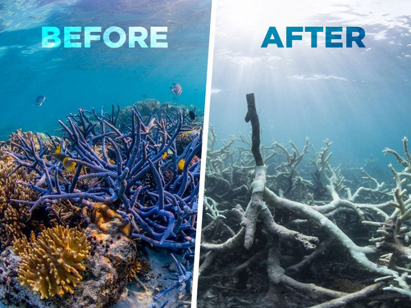
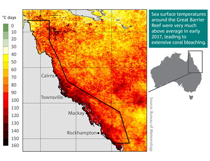

ENVIRONMENT / CLIMATE CHANGE
The Great Barrier Reef in Crisis
How climate change is threatening one of the world's most beautiful natural wonders.
A Natural Wonder Under Threat
The Great Barrier Reef is the world's largest coral reef system. Located off the coast of Australia, it is home to thousands of marine species. However, climate change is putting this unique ecosystem at risk. Climate change due to human activities is a global issue affecting all ecosystems and their services and benefits. Climate change is the most pervasive and persistent influence on the Great Barrier Reef. The most immediate and current threats from climate change are: ocean warming, resulting in thermal extremes that cause mass mortality and sublethal impacts in corals and other organisms extreme rainfall events that reduce water quality. Other impacts of climate change, such as sea-level rise and ocean acidification, are also increasingly affecting the Great Barrier Reef, but not with the same immediate and Reef-wide impact as sea temperature increases. The present-day frequency and severity of climate change-related impacts are increasing and interacting with the other key threats, compounding their effects. A primary concern is the vulnerability of the Great Barrier Reef’s key habitats and habitat-forming species, such as corals, seagrasses, mangroves and wetlands, based on their roles in supporting ecosystem resilience and maintaining biodiversity.

The Great Barrier Reef has been suffering damage from both nature and humanity, but the damage may be repairable. (Image: Marine Scoop)
Rising Ocean Temperatures
As global temperatures rise, the oceans absorb more heat. Warmer ocean water causes stress to coral reefs and can lead to coral bleaching. Coral reef habitats and coral-dependent species are among the most vulnerable to sea temperature increases. Proximity to their thermal limits brought about by ocean warming signifies a precarious condition for the Great Barrier Reef's corals, as seen by the four mass coral bleaching events since 2016. In 2016 and 2017, the Great Barrier Reef experienced two consecutive summers of severe mass coral bleaching, which occurred towards the end of the most severe, widespread, and longest-lasting global coral bleaching event on record. These bleaching events caused widespread coral mortality across the Great Barrier Reef.

Coral bleaching risk map showing unusually warm sea surface temperatures around the Great Barrier Reef. Source: CSIRO, State of the Climate 2018.
Between 2018 and 2022, coral cover in offshore reefs recovered rapidly, led by fast-growing plating and branching corals. Limited cyclone activity and flood impacts also facilitated further recovery, as did mitigation of further coral losses from the ongoing crown-of-thorns starfish outbreak through targeted control actions across much of the Great Barrier Reef Marine Park. Recovery occurred despite a further, albeit less severe, mass coral bleaching event in 2020. It continued until the trend plateaued in response to the cumulative effects of the 2022 mass coral bleaching event and localised crown-of-thorns starfish impacts. Another widespread mass coral bleaching event unfolded in the Great Barrier Reef in early 2024. The Great Barrier Reef’s key habitats have a natural resilience against acute physical disturbances, such as cyclones, intense rainfall, freshwater flood plumes, and heat waves. However, climate change is exacerbating both acute and chronic disturbances, shrinking recovery windows and affecting ecological processes that underpin ecosystem resilience.
What Is Coral Bleaching?
Coral bleaching happens when stressed corals lose the colorful algae living inside them. Without these algae, corals turn white and may eventually die if stressful conditions continue.